Bonjour à tous ! Je m'appelle Frédéric
Hardy. J'ai commencé à mettre en œeuvre des tests sans le savoir en 1995
lorsque j'ai débuté ma formation universitaire, avant de commencer à réellement
les mettre en œeuvre en 2005. J'ai donc appris le test empiriquement, en les
mettant en pratique dans le cadre de projets plus ou moins complexes. Depuis,
j'ai créé le framework de tests unitaires atoum
et j'en suis le développeur principal.
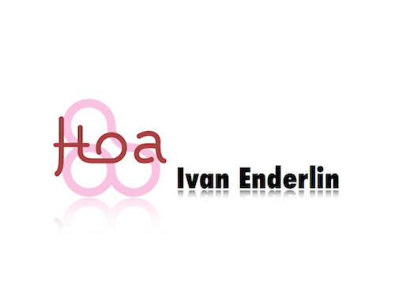
Bonjour à tous ! Je m'appelle Ivan
Enderlin. Je prépare actuellement une thèse en Informatique, spécialée dans
la sécurité et sûreté du logiciel. Je suis également contributeur de divers
logiciels open-source comme PHP, Mozilla, Debian etc. Je suis enfin auteur et
développeur principal de Hoa, un ensemble
de bibliothèques PHP.
Introduction
Aujourd'hui, le test devient à la mode dans le monde industriel. Les outils
permettant de les mettre en œuvre sont de plus en plus nombreux et toujours plus
évolués ; les techniques de travail changent tout comme les mentalités ; bref le
test se démocratise gentiment. Cependant, l'information à leur
sujet est souvent fragmentée et parcellaire, si bien que la plupart des
développeurs ont des difficultés à les appréhender correctement de manière
globale et se posent beaucoup de questions.
L'histoire que nous allons vous raconter a pour but d'apporter quelques
réponses aux questions qui nous ont été le plus souvent posées.
Il était une fois une équipe de développeurs qui souhaitait concevoir un
programme répondant à un besoin avec la meilleure qualité et
assurance possible, et afin d'y arriver, ils décidèrent
d'utiliser les tests.
Définition
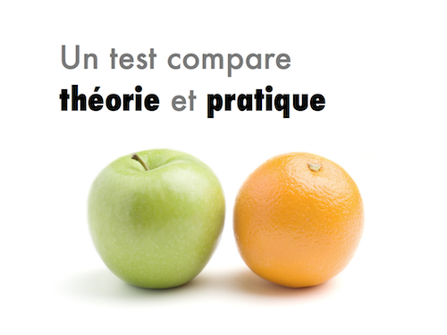
Un test permet de confronter deux mondes : théorique et pratique. L'objectif
est d'exécuter un SUT pour système sous test sous certaines conditions et
contraintes, pour à la fin vérifier la sortie ou l'état de ce SUT.
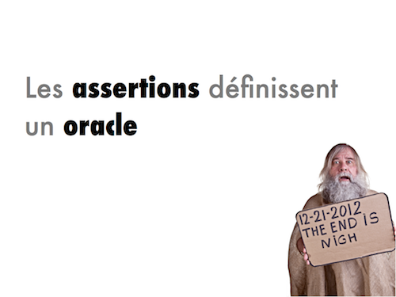
Dans le test dit manuel, c'est le testeur qui va écrire
toutes les conditions d'exécution du SUT.
Et les oracles permettent de calculer les
verdicts des tests : tout simplement si les tests ont été un
succès ou un échec.
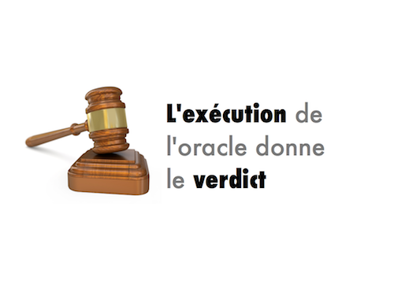
Les tests suivent tous ce processus à quelques nuances près.
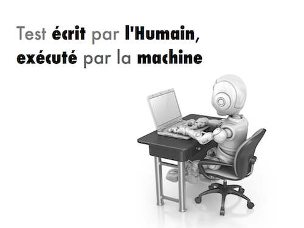
Cependant, il est nettement plus confortable pour le développeur de faire
exécuter les tests par une machine, car elle est capable de les exécuter aussi
souvent que nécessaire, automatiquement, et beaucoup plus efficacement et
rapidement.
À ce stade, on parle de vérification de programme.
Test unitaire
Et avant de tester le programme dans sa totalité, il est plus
évident de tester des petites parties, les unes après les autres. Nous allons
donc chercher quelles sont les parties « atomiques » de notre
programme, et le plus souvent, ce seront les fonctions ou les méthodes des
classes. Pour faire une métaphore, ce serait comme construire une maison sans
avoir confiance dans ces fondations.
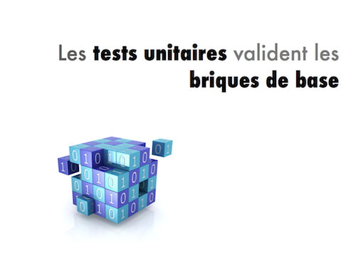
Nous parlons alors de tests unitaires, puisqu'ils ont pour
but de vérifier le fonctionnement de la plus petite unité de code existante, qui
est alors le SUT évoqué précédemment.
Notre équipe de développeurs a donc commencé à écrire du
code, puis ensuite à rédiger les tests correspondants afin de les exécuter
régulièrement. Cela leur a été d'autant plus facile qu'un test unitaire s'écrit
souvent dans le même langage que celui utilisé pour écrire le code.
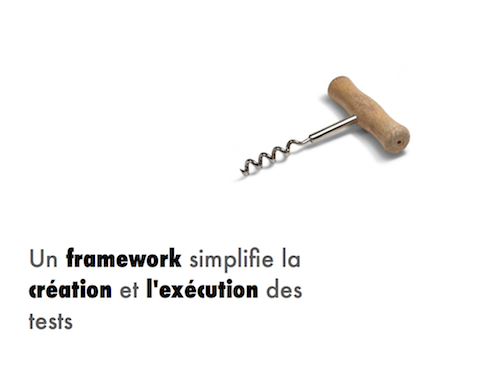
Et pour se faciliter encore plus la tâche, ils ont utilisé un
framework de tests unitaires, car c'est un outil dont le but
est d'organiser, faciliter et simplifier l'écriture et l'exécution de un ou
plusieurs tests (dans ce cas, on parle de suite de tests). Un
tel framework doit également être capable de produire des rapports dans
différents formats qui permettront aux développeurs de pouvoir localiser avec
précision les tests qui ont échoué et la raison de cet échec.
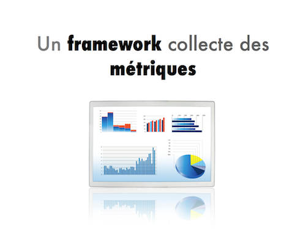
Ces rapports peuvent également contenir d'autres informations, notamment des
métriques permettant de qualifier la qualité des tests. Tout
ces facteurs nous permettent de savoir quelle confiance avoir dans notre
code.
Le choix d'un framework de test unitaires a été relativement simple pour
notre équipe de développeur car ils ont tout simplement expérimentés ceux qui
leur semblaient intéressants. Leur choix a été totalement subjectif, mais ce
n'est pas un mal car l'important n'est pas tant l'outil choisi que le fait
d'être efficace avec.
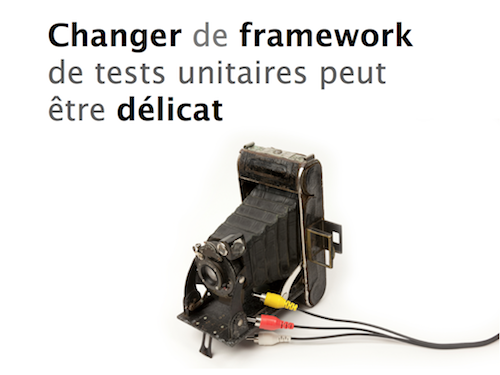
Toutefois, le choix n'est pas anodin car ces outils sont en général très
peu compatibles entre eux, et par conséquence, il n'y a pas de
solution simple et rapide permettant d'en changer.
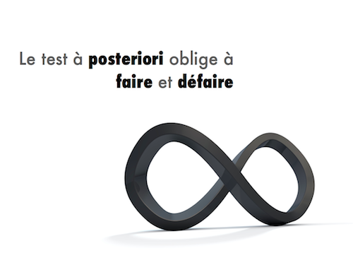
Notre équipe écrit donc des tests a posteriori de la rédaction de
leur code avec leur framework de tests unitaires favori. Cependant, ils n'ont
pas tardé à réaliser que cette façon de faire présentait des inconvénients
significatifs.
Testabilité
Tout d'abord, ils se sont aperçus que pour être testable,
leur code devait forcément suivre un certain nombre de bonnes pratiques de
développement, et le fait d'écrire leurs tests a posteriori rendait
cette contrainte difficile à satisfaire. Ils étaient alors obligé de modifier le
code concerné et de faire plusieurs fois le même travail.
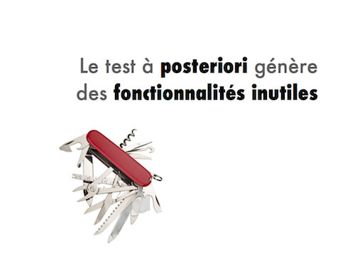
De plus, ils se sont aperçus qu'ils développaient des fonctionnalités dont
ils n'avaient pas besoin, ce qui leur faisait encore perdre plus de temps.
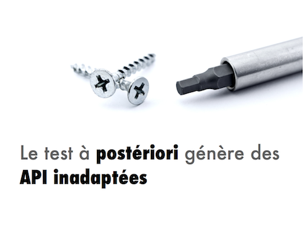
Enfin, lors de la mise en œuvre de leur code au sein des tests, ils se
rendaient parfois compte qu'il n'était pas pratique à utiliser, du fait d'une
API mal pensée ou peu adaptée au contexte d'utilisation.
Ces trois problèmes étant induits par le fait d'écrire les tests unitaires
après avoir écrit le code. À l'avenir, nos développeurs ont décidé de faire
l'inverse : écrire les tests unitaires a priori.
Test Driven Development
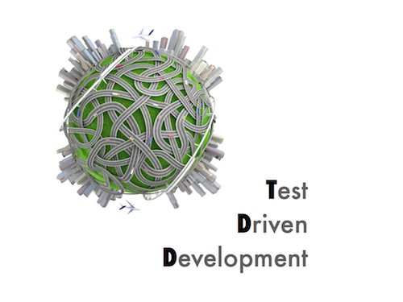
Ce faisant, ils ont donc commencé à appliquer une méthode de développement
connue sous l'acronyme TDD pour Test Driven Development.
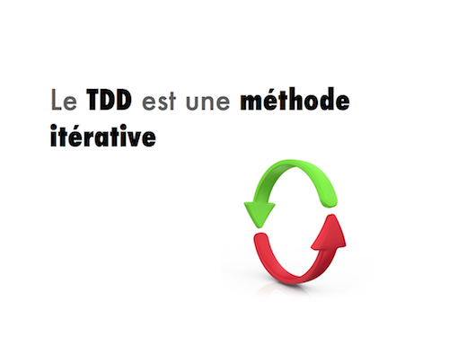
Cette méthode impose un développement itératif qui facilite la conception du
code. Lorsque l'un de nos développeurs veut écrire du code, il commence par
écrire le test le plus simple possible permettant de le décrire, et en général
il consiste à instancier une classe et à appeler la méthode devant être testée.
Le développeur exécute alors ce test unitaire, qui aboutit forcément sur un
échec puisque le code correspondant n'existe pas encore.
La plupart des frameworks de tests matérialise l'échec sous la forme d'un
message écrit en rouge, d'où l'expression « la barre est rouge ».
C'est le signal qui autorise le développeur a écrire du code mais juste ce
qui est nécessaire pour exécuter le test avec succès et que la « barre devienne
verte ».
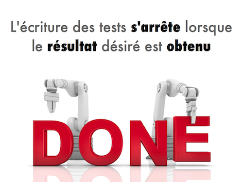
Comme la méthode de travail est itérative, le développeur recommence ce
processus en écrivant un nouveau test et ainsi de suite jusqu'à ce que le code
réponde à ses besoins.
Régression
Évidemment, au cours de ce processus, une modification du code peut invalider
un test déjà existant. Nous parlons de régression. Cependant,
grâce aux tests justement, ces régressions sont détectées immédiatement et
peuvent être corriger rapidement grâce aux rapports générés par notre outil de
test.
Malheureusement, il peut arriver que des régressions aient
été introduites sans que les tests ne puissent les détecter immédiatement. Nos
développeurs se sont demandés comment être sûr qu'un test soit de bonne
qualité ? Dans un premier temps, les tests doivent représenter
les exigences de notre code ou de notre projet. Mais nous
voulons que les tests apportent un élément de sûreté (notamment
avec la détection de régression).
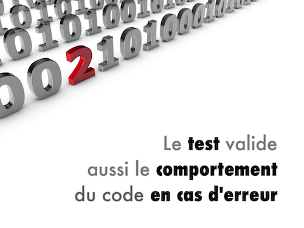
Pour cela, nos développeurs ont écrit des tests positifs qui
symbolisent un comportement normal, mais aussi des tests
négatifs qui symbolisent un comportement anormal. Cette
approche ajoute de la sûreté : le code fait ce qu'il doit faire et ne fait pas
ce qu'il ne doit pas faire.
Couverture
Les résultats étaient nettement plus satisfaisant et leur code était devenu
de bien meilleur qualité. Mais ce n'était pas suffisant car dans certains cas,
ils découvraient encore des erreurs inattendues et difficiles à détecter. Ils
ont voulu qualifier la qualité des tests, savoir à quel point ils pouvaient
avoir confiance dans leurs tests.
Heureusement, une métrique très utile dans le cas des tests
unitaires est la couverture du code. Durant l'exécution d'un
test, le framework utilisé va analyser quelle partie du code a été
atteinte ou couverte. Une fois la suite de tests exécutée en
entier, l'outil agrège toutes ces données et nous fournit un rapport détaillé
sur la couverture. Plus elle est importante et plus nos tests sont de
qualité.
Il existe plusieurs niveaux de couverture. En réalité, nous pouvons
représenter un code par son CFG pour Control Flow Graph. Chaque nœud
dans ce graphe représente un bloc de code et chaque arc (orienté) représente un
saut d'un nœud vers un autre. Une exécution d'un test sera représenté par un
chemin dans ce graphe. Des couvertures évidentes apparaissent comme par exemple
tous-les-arcs. D'autres sont plus difficiles comme par exemple
tous-les-chemins. En effet, si notre code comporte une boucle,
peut-être qu'une partie sera atteignable uniquement après
i passages dans cette boucle ; c'est la couverture
tous-les-i-chemins.
Nous pouvons aussi prendre en compte la dépendance entre les variables, leurs
utilisations etc., mais l'objectif ultime étant la couverture
tous-les-chemins.
Malheureusement, selon les langages, rares sont les frameworks capables de
détecter toutes les couvertures. La couverture la plus utilisée est
tous-les-nœuds, elle reste faible mais c'est toujours une
avancée !
ping-pong
Mais nos développeurs ont trouvé une solution supplémentaire
pour améliorer la qualité de leur code directement à la source : travailler en
binôme.
Ils se partagent ainsi le même écran, le même clavier et la même souris.
En dehors de l'équipe, certain ont pensé que c'était du gaspillage de
ressources et qu'il fallait en conséquence arrêter immédiatement. Cependant, il
leur a suffit de regarder attentivement les binômes en train de travailler pour
qu'ils reconnaissent que la paire travaille bien simultanément et en équipe. En
effet, lorsque l'un a le clavier, l'autre porte un regard critique sur le code
qui est écrit, ce qui lui permet de répérer les erreurs de syntaxe, le non
respect des conventions de codage et de faire des suggestions souvent bienvenues
pour améliorer la lisibilité, la maintenance ou l'efficacité du code ou des
tests. De plus, deux cerveaux sont bien plus à même de répertorier l'ensemble
des cas d'utilisation possibles pour du code.
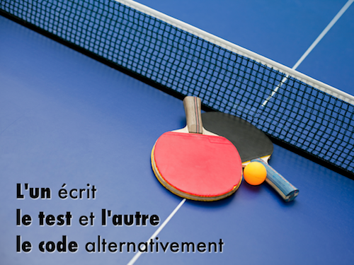
Et d'ailleurs, pour y parvenir au mieux, nos développeurs pratiquent de temps
à autre le ping-pong. L'un des deux rédige alors le test tandis
que l'autre écrit le code permettant de l'exécuter avec succès. Les rôles sont
régulièrement permutés afin d'éviter la lassitude et détecter plus
d'erreurs.
Les résultats sont très impressionnants mais cette façon de travailler est
éprouvante car elle ne laisse aucun répit aux deux développeurs, et elle ne doit
donc être utilisée qu'à bon escient. Un dernier avantage du binômage : chaque
membre est amené à travailler sur l'ensemble du code, car les binômes sont très
souvent modifiés et le partage des connaissances se fait donc au fil de l'eau de
manière transparente. Les membres de l'équipe ont tous une vision globale du
code du programme.
Mock
Une vision globale mais pas totale. Dans certains cas, nos
amis devaient travailler sur du code qui nécessitait des parties encore non
développées ou non finalisées, car le code a des dépendances.
Par exemple, il arrive fréquemment qu'un test ait besoin d'accéder à un système
de fichiers, à une base de données ou bien encore à une connexion réseau, un Web
service etc.
Or, si ce composant n'existe pas, cela est bloquant pour la tâche, et même
s'il existe, il n'est pas évident de simuler un dysfonctionnement pour avoir une
suite de test complète. C'est pourquoi nos développeurs ont décidé d'utiliser
les mocks.
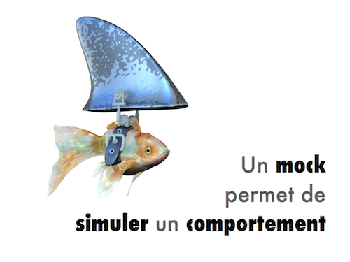
Un mock est capable de simuler une dépendance. Son comportement est spécifié
par le testeur. Grâce aux mocks, il devient possible de simuler des erreurs lors
d'une sauvegarde dans un fichier ou lors d'une connexion à une base de données
ou encore à un réseau, tout en améliorant la portabilité des
tests. Un mock fait parti intégrante du test et il sera en conséquence toujours
disponible indépendamment de son environnement d'exécution.
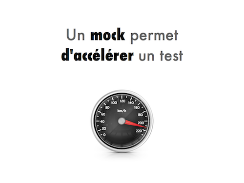
Nous remarquons aussi que les mocks améliorent la vitesse
d'exécution des tests car, étant virtuels, ils ne dépendent d'aucune contrainte
technique et s'exécutent beaucoup plus rapidement que leurs équivalents du monde
réel. Lorsqu'un mock simule une connexion à un réseau, la latence du réseau ou
des serveurs n'a donc plus aucune influence sur la vitesse d'exécution des tests
(sauf si le mock le spécifie bien entendu).
La mise en œuvre des tests unitaires et plus particulièrement
du TDD ont permis à notre équipe non seulement de gagner en qualité, ce qui
était l'objectif de départ, mais aussi en productivité et en confiance. D'autres
effets positifs n'avaient même pas été anticipés. Par exemple, au début du
projet, ils avaient alloué du temps pour la rédaction des test a
posteriori, temps qui s'était révélé bien souvent insuffisant.
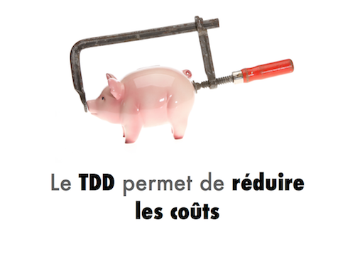
Or, avec le TDD, l'écriture des tests revient à développer le code du
programme, ce qui revient à dire que le coût d'écriture des tests est confondu
avec le coût du développement. Et cerise sur le gâteaux, les développeurs ont
réalisé que les tests peuvent servir de documentation ! Il est donc devenu
totalement inutile d'allouer du temps spécifique à l'écriture des tests ou d'une
catégorie de documentation, ce qui facilite la planification du projet et a
permis d'améliorer la maîtrise des délais. Mais aussi, à chaque instant, notre
équipe était certaine que l'existant fonctionnait.
Test d'intégration
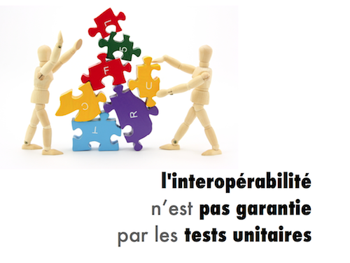
Toutefois, même si les parties unitaires étaient de qualité, des erreurs
pouvaient apparaître au moment d'assembler ces parties. Pour reprendre la
métaphore sur la maison, les briques sont toutes bien réalisées mais personne
n'a pensé à regarder si elles sont compatibles entre elles.
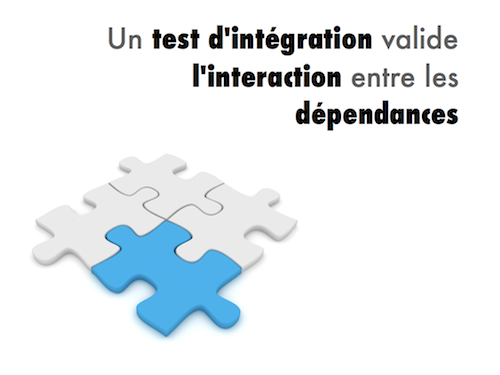
Pour cela, une technique complémentaire au test unitaire est
le test d'intégration. Le test d'intégration n'est pas très
différent d'un test unitaire car le SUT est un agrégat d'unités de
code.
Test structurel
En fait, nous manipulons toujours du code, nous avons
toujours accès au code source. Et quand nous testons à partir du code, nous
appelons ça le test structurel ou le test white-box
(qui comprend la notion de couverture, de CFG etc.). Des outils adaptés au test
unitaire seront probablement adaptés au test d'intégration.
Mais attention, les métriques pour qualifier la qualité d'un
test d'intégration ne seront pas les mêmes.
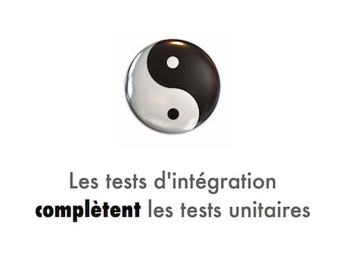
C'est normal car les tests d'intégrations viennent compléter les tests
unitaires, ils offrent une validation à un niveau supérieur.
Un test d'intégration se déroule dans un environnement très proche de celui du
monde réel une fois que toutes les dépendances ont été mises en place, a
contrario des tests unitaires qui se basent sur des mocks. Le code peut se
comporter différemment et dans ce contexte des bugs peuvent apparaîtrent. La
complémentarité entre les techniques de tests est importante.
Test fonctionnel
Armés de leurs tests unitaires et d'intégrations, notre
équipe est donc maintenant certaine de disposer de briques élémentaires fiables
et compatibles, nécessaires à la construction de leur programme. Cependant, ces
tests ne leur permettent pas de vérifier que le programme construit à partir de
ces briques de base répondra aux besoins de ses utilisateurs. Pour reprendre
notre métaphore, la maison est construite mais est-ce que la porte à 3 mètres du
sol est pratique à utiliser ? Or, c'est justement le rôle des tests
fonctionnels de vérifier que le code du programme répond aux
besoin de l'utilisateur.
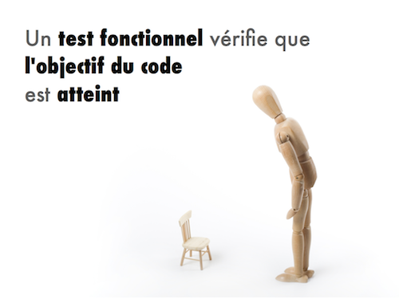
A l'instar du test unitaire ou d'intégration, le test fonctionnel
doit valider le comportement du programme mais, une fois de plus, à un niveau
supérieur. Cependant, il est très différent dans sa forme car
il doit permettre de valider un comportement fonctionnel et non technique. C'est
pourquoi il est totalement indépendant à tout point de vue du langage utilisé
pour le développement du programme. Il se présente le plus souvent comme un
script essayant d'exprimer des séquences de manière simple et
naturelle permettant d'amener le système dans un état particulier pour ensuite
valider cet état. L'objectif est de simuler un comportement type d'un
utilisateur.
Intégration continue
Évidemment, pour que tout ça soit réalisable, il faut la
dernière version disponible du programme, compilée, assemblée et utilisable par
les outils de test. Or, réunir tous ces paramètres à chaque modification du code
est une tâche longue et fastidieuse !
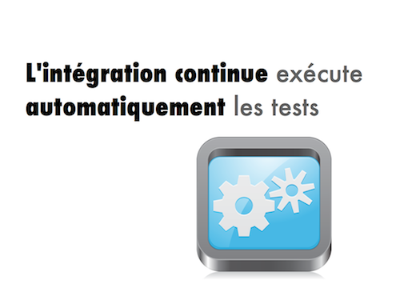
C'est la raison pour laquelle notre équipe a mis en place une plateforme
d'intégration continue qui récupère les versions successives du
code à tester, exécute les tests, compile et assemble le programme si tous les
indicateurs sont au vert. Le cas échéant, des notifications sont émises
rapidement afin d'avoir un retour immédiat. Ainsi, nos
programmeurs gagnent vraiment en productivité et peuvent corriger leurs erreurs
au plus tôt.
Cependant, les tests fonctionnels ont posé un problème à nos développeurs
car, par habitude, ils ont eu tout d'abord tendance à y décrire
techniquement plutôt que fonctionnellement la façon dont le programme devrait
fonctionner. Leurs premiers tests fonctionnels étaient étroitement lié au
fonctionnement de leur code, et leur maintenance est vite devenue fastidieuse
car chaque modification du code devait obligatoirement être répercutée sur les
tests concernées. Il leur a cependant suffit de se dire que les tests
fonctionnels devaient continuer à passer même après une refonte complète du code
pour résoudre ce problème. Les tests fonctionnels leur ont également permis de
tester plusieurs interfaces utilisateur pour leur programme. En effet, un
programme doit se comporter de la même façon indépendamment de la façon dont
l'utilisateur l'utilise : en ligne de commande, via une interface
graphique ou encore un navigateur Web.
Conclusion
Notre équipe de développement est donc aujourd'hui heureuse
et à donner naissance à beaucoup de programmes depuis ses premiers pas dans
l'univers du test. Grâce à la mise en œuvre du TDD et des tests unitaires,
d'intégration et fonctionnels, elle est aujourd'hui parfaitement à même de
livrer du code fiable et répondant aux besoins de ses utilisateurs en toute
confiance. Grâce au binômage, chacun d'eux a une vision plus globale du code et
aucun membre de l'équipe n'est l'expert exclusif d'une partie du code.
L'intégration continue leur permet de surveiller automatiquement que les
modifications ou les évolutions effectuées sur leur code n'a pas d'influence
négative.
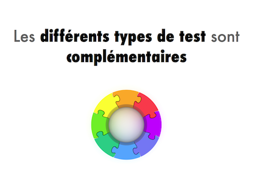
Pour cela, il leur a fallu mettre en œuvre trois types de tests différents,
chacun d'entre eux étant dédié à un objectif clair et étant
complémentaire des autres.
Notre histoire aurait pu être très différente car il n'y a
pas qu'une seule façon de mettre en œuvre correctement des tests. Il existe
d'autres méthodes que le TDD, tout aussi pertinente, et différentes façons de
rédiger des tests, indépendamment de leur nature. De plus, notre histoire se
déroule au pays des « bisounours », où tout problème a une solution rapide et
efficace avec un coût temporel ou financier nul, ce qui est très éloigné de la
réalité. Dans le « vrai monde », il est en effet parfois nécessaire de devoir
s'adapter pour faire face à des contraintes temporelles ou financières qui ne
nous permettent pas de mettre en œuvre la totalité des tests que l'on
souhaiterait utiliser. Dans ce contexte, le plus important est de garder à
l'esprit que même faire un unique test, à la condition qu'il soit bien écrit
évidemment, est bien plus pertinent que de ne pas faire de test du tout. Enfin,
en fonction du langage de programmation utilisé et des outils employés, les
problèmes rencontrés et leur solution peuvent être très différents.
Tout ce qui précède n'est donc pas une recette magique
permettant d'écrire des tests pertinents et de bonne qualité car il faut de
toute façon du temps et de l'expérience pour y parvenir. Écrire un test est un
métier.
One more thing : test automatique
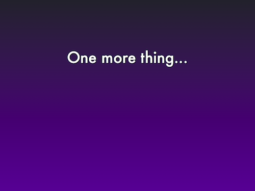
On a surtout parlé de white-box mais vous aurez deviné qu'il existe
aussi le black-box. En réalité, c'est le test fonctionnel ! Quand on ne
connaît pas le code ou que l'on n'y a pas accès, on est en boîte noire. On a
évoqué un moyen de tester son programme avec des scripts écrits manuellement,
mais il existe d'autres techniques, plus coûteuses cependant et qui nécessitent
plus de compétences, comme le MbT pour le test à partir de
modèle. L'idée est d'avoir un modèle formel qui décrit l'évolution du
système à travers une vision abstraite de son fonctionnement. Un modèle est
souvent caractérisé par une spécification la plus formelle
possible. C'est grâce à son aspect abstrait que le MbT permet de générer des
suites de tests automatiquement mais aussi d'analyser la
conformance entre le modèle et le code, normalement réalisés
dos-à-dos par des équipes différentes. On peut également
animer un modèle pour détecter les erreurs de conceptions.
Mais comme précisé, ça coûte cher et c'est souvent dédié à des logiciels
nécessitant une très haute sécurité et sûreté. Heureusement, il existe le
grey-box qui prend le meilleur des deux mondes ! On est sûr le code au
niveau unitaire et on l'annote avec des
contrats. Un contrat est constitué d'une pré-condition, d'une
post-condition et d'invariants. On peut s'en servir de deux manières : utiliser
les contrats pour vérifier notre programme, un peu comme on le
faisait avec du test unitaire manuel, ou alors valider notre
programme. L'idée est alors d'utiliser la pré-condition pour générer des données
de tests et utiliser la post-condition et les invariants comme oracle.
Vous aurez compris que les éléments clés dans le test automatique est la
spécification (donnée par l'utilisateur) et la génération des données (par la
machine) : comment générer des données réalistes ? Il faut assurer la meilleure
couverture possible et le plus efficacement possible. Que choisir : génération
aléatoire, statique, dynamique, concolic, fuzzing,
search-based … ? Autant de domaines à découvrir (sans mauvais jeu de
mots) !
Et c'est bien beau de générer des suites de tests mais comment les
maintenir : lesquelles conservées, lesquelles mettre à jour, lesquelles
supprimées ? Et on n'a pas non plus parlé des tests paramétrés, ni des tests à
partir de scenarii etc.
Heureusement que toutes ces questions ont des réponses, ou des bouts de
réponses. En recherche, on voit de plus en plus d'outils « intelligents » qui
mélangent plusieurs techniques et qui sont utilisés dans l'industrie … pour de
vrai ! N'oubliez pas que le test est un métier.
One more thing2 : quelques outils
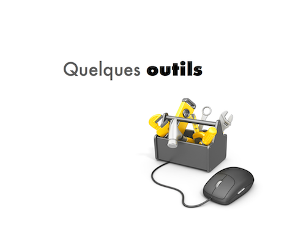
Du coup, voici quelques outils que vous pourrez utiliser. Pour du test
structurel (white-box) manuel en PHP :